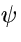
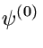
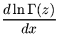
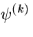
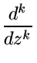
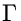
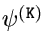

<!DOCTYPE HTML PUBLIC "-//W3C//DTD HTML 3.2//EN">
<!--Converted with LaTeX2HTML 97.1a (August 26th, 1997)
 by Nikos Drakos (nikos@cbl.leeds.ac.uk), CBLU, University of Leeds
* revised and updated by:  Marcus Hennecke, Ross Moore, Herb Swan
* with significant contributions from:
  Jens Lippman, Marek Rouchal, Martin Wilck and others -->
<HTML>
<HEAD>
<TITLE>Psi (Digamma) and Polygamma Functions for Complex Argument</TITLE>
<META NAME="description" CONTENT="Psi (Digamma) and Polygamma Functions for Complex Argument">
<META NAME="keywords" CONTENT="top">
<META NAME="resource-type" CONTENT="document">
<META NAME="distribution" CONTENT="global">
<META HTTP-EQUIV="Content-Type" CONTENT="text/html; charset=iso_8859_1">
<LINK REL="STYLESHEET" HREF="top.css">
</HEAD>
<BODY >
<P>   <H2>C317: Psi (Digamma) and Polygamma Functions for Complex Argument</H2>
<table border>
<tr><td align=left>Author(s): K.S. K&#246;lbig  <td align=left>Library: MATHLIB 
<tr><td align=left>Submitter:   <td align=left>Submitted: 15.11.1995  
<tr><td align=left>Language: Fortran  <td align=left>Revised:   
</table>
<BR>
<!-- KEY VALUE="XYXY" -->
<P>
Function subprograms <TT>CPSIPG</TT> and <TT>WPSIPG</TT> calculate either
the logarithmic derivative of the gamma function (the psi, or
digamma, function)

<!-- MATH: \begin{displaymath}
\psi(z) \ \equiv \ \psi^{(0)}(z) \ = \ \frac{d\ln \Gamma(z)} {dx}
\end{displaymath} -->

<P ALIGN="CENTER">
(<I>z</I>)   (<I>z</I>) =   
</P>
or one of the other polygamma functions

<!-- MATH: \begin{displaymath}
\psi^{(k)}(z) \ = \ \frac{d^k}{dz^k} \, \psi(z) \ = \
\frac{d^{k+1}}{dz^{k+1}} \, \ln \Gamma(z)
\end{displaymath} -->

<P ALIGN="CENTER">
(<I>z</I>) =  ; SPMthinsp;(<I>z</I>) = tex2html_image_mark>#tex2html_wrap_indisplay123#; SPMthinsp; ln (<I>z</I>)
</P>
for complex arguments 
<!-- MATH: $z \neq -n,(n=0,1,2,\ldots)$ -->
<I>z</I>  - <I>n</I>,(<I>n</I> = 0, 1, 2,...) and 
<!-- MATH: $k = 0,1,2,3,4$ -->
<I>k</I> = 0, 1, 2, 3, 4.
<P><P>
The double-precision version <TT>WPSIPG</TT> is available only on
computers which support a <TT>COMPLEX*16</TT> Fortran data type.
<P><p><b>Structure:</b><p>
<TT>FUNCTION</TT> subprograms
<BR>
User Entry Names: <A NAME=CPSIPG><TT>CPSIPG</TT></A>, <A NAME=WPSIPG><TT>WPSIPG</TT></A> <BR>
Files Referenced: <TT>Unit 6</TT> <BR>
External References: <A HREF="../n002/top.html">MTLMTR</A>, <A HREF="../z035/top.html">ABEND</A>
<P><p><b>Usage:</b><p>
In any arithmetic expression,
<DIV ALIGN="CENTER">
<TT>CPSIPG(Z,K)</TT> or <TT>WPSIPG(Z,K)</TT> has the value

<!-- MATH: $\psi^{(\mathtt{K})}(\mathtt{Z})$ -->
(<TT>Z</TT>),
</DIV>
where <TT>CPSIPG</TT> is of type <TT>COMPLEX</TT>, <TT>WPSIPG</TT> is of type
<TT>COMPLEX*16</TT>, and where <TT>Z</TT> has the same type as the
function name. <TT>K</TT> is of type <TT>INTEGER</TT>.
<P><p><b>Method:</b><p>
The method for (<I>z</I>) described in Ref. 1 is adapted accordingly.
<P><p><b>Accuracy:</b><p>
<TT>CPSIPG</TT> (except on CDC and Cray computers)
has full single-precision accuracy.
For most values of the argument <TT>Z</TT>, <TT>WPSIPG</TT>
(and <TT>CPSIPG</TT> on CDC and Cray computers) has an accuracy of
approximately two significant digit less than the machine precision.
<P><p><b>Error handling:</b><p>
Error <TT>C317.1:</TT> 
<!-- MATH: $\mathtt{K < 0}$ -->
<TT>K</TT> ; SPMlt; 0  or 
<!-- MATH: $\mathtt{K > 4}$ -->
<TT>K</TT> ; SPMgt; <TT>4</TT> . <BR>
Error <TT>C317.2:</TT> 
<!-- MATH: $\mathtt{X} = -n, (n=0,1,2,\ldots)$ -->
<TT>X</TT> = - <I>n</I>,(<I>n</I> = 0, 1, 2,...). <BR>
In both cases, the function value is set to zero, and a message is
written on <TT>Unit 6</TT>, unless subroutine <TT>MTLSET</TT> (N002) has
been called.
<P><p><b>References:</b><p>
<DL COMPACT>
<DT>1.
<DD>K.S. K&#246;lbig, Programs for computing the logarithm of the gamma
function, and the digamma function, for complex arguments,
Computer Phys. Comm. <B>4</B> (1972) 221-226.
</DL>
  
<BR><HR>
<ADDRESS>
Michel Goossens/IT-ASD (last mod. 1997-09-01)
</ADDRESS>
</BODY>
</HTML>
